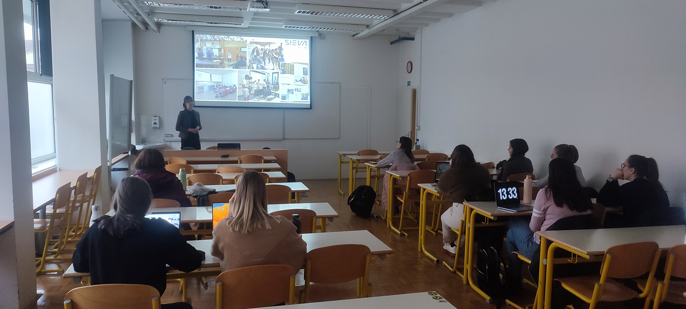
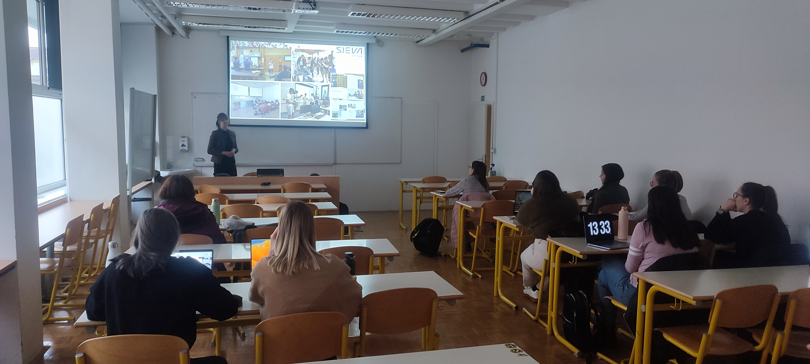

After getting my Bachelor's degree in Mathematics at the Faculty of Mathematics and Physics in Ljubljana, I proceeded to pursue my Master's degree at the Faculty of Electrical Engineering at the Robotics department.
During this time, I gained experience working as a roboticist at Revoz (a wholly owned Renault subsidiary) and as an robotic application developer and organiser of the Days of Industrial Robotics event.
I became fascinated with virtual reality, which motivated me to pursue a Master's degree in this area.
After my studies, I secured a position as the head of the newly established Laboratory for Digital Technologies at the SiEVA research center. The laboratory's primary objective is to
facilitate and guide companies from the automotive industry in the adoption of XR technologies within their production and work processes. We serve as a central hub that connects companies,
faculties, and hardware and software suppliers while also promoting and enhancing knowledge across all three verticals.

The Master's thesis is in two parts. The first part provides a comprehensive overview of VR focusing on the automotive industry, while the second part summarises the practical development of three
VR applications covering different elements of the manufacturing and business process.
Demo applications are developed in the Unity game engine and are compatible with the Valve Index VR headset:
VR fire safety training application (inspired by the built-in force sensors in the Valve Index controllers),
VR simulation of the production process and training of workers, where a user must insert ball bearings into a U-profile using a hand press,
VR application for creating and simulating new workstations to help with ergonomics assessment.
In 2021 and 2022, I organised and carried out a 5-day workshop for elementary and high-school students on extended reality and game programming. Through lectures, testing several types of
XR hardware (Oculus Quest 2, Valve Index, Hololens 2, etc.), and practical project work on the computer, participants learned:
the basics of XR and 360° technology,
the basics of game development in Unity game engine,
using Vuforia SDK.
More information on the content of the workshops can be found under the tab WORKSHOPS.


In 2022, I was invited to deliver a lecture at the NTF, where I discussed the fundamentals of XR and presented real-world examples of its applications in the automotive industry. Furthermore, I conducted theoretical and practical courses at the FE in 2021 and 2022, in which students received a two-hour introduction to XR basics and learned about its use-cases in the automotive industry. In addition, students were trained to program their own MR (Mixed Reality) application using the MRTK Unity plugin and the Unity game engine, which would be compatible with Hololens 2. All courses provided students with the opportunity to test XR hardware.
More information on the content of the MR workshop can be found under the tab WORKSHOPS.
 

The laboratory focuses on extended reality (XR), which encompasses virtual (VR), augmented (AR) and mixed (MR) reality. Our primary goal is to assist and encourage Slovenian companies in the automotive industry in
implementing XR into their work and production processes. My responsibilities include:
testing XR hardware and software,
developing demo XR applications,
providing assistance with implementation of XR in companies,
consulting and conducting feasibility studies,
collaborating with faculties and XR hardware and software suppliers,
project management,
equipment procurement,
staying up-to-date with XR trends,
managing social media,
participating in international projects (such as the Interreg ITA-SLO Techmology project),
...
This is a demonstration Android application developed in Android Studio, which is compatible with RealWear smart devices and designed to support production workers. The application provides step-by-step guidance through the production process and enables users to access more detailed instructions or connect with an expert via MS Teams.
A demo MR application was developed using the Unity game engine, MRTK toolkit, and Microsoft Azure Spatial Anchors. The application features smart 3D instructions that are spatially referenced to a 3D model of an armchair.
A simple quiz app was developed using the Unity game engine and MRTK toolkit to engage visitors during Careers and Entrepreneurship Days in Idrija.
The project is a Unity game engine-based prototype designed to create 360° tours, serving as an educational tool for students interested in learning the fundamentals of XR and Unity development. The prototype is utilized in workshops as a teaching aid.
The final application is available here.
6 locations,
2D signs indicating the city's landmarks,
animated 3D model of a knight,
target shooting,
video content,
info point with url link to Ljubljana castle's official website.

The ongoing project is a prototype for an infinite runner game, which involves navigating a blood cell within a blood vessel to collect oxygen particles. The player can use collected oxygen to perform a dash, which can eliminate any encountered blood clots. However, if the player collides with a blood clot without dashing, the game ends. Notably, the project incorporates a heartbeat feature that periodically accelerates the blood vessel's movement and a laminar flow that is stronger in the center of the vessel and weaker near the vascular wall.
The final application is available here.

The project is currently in development and serves as a prototype for a side-scrolling game. The player takes on the role of an anomaly exterminator who is located near a mysterious lighthouse. Various types of anomalies are present in the game, including a teleportation anomaly that prevents the player from leaving and an image distortion anomaly. A short video showcases the game's main functionalities and components:
main menu and pause menu (Resume, Quit, New Game, Load Game, Settings (volume, language), Return to main menu),
the script and monologues are written in Twine (monologues are written in Slovene and English for localisation purposes),
implementation of Twine output to Unity,
inventory system (working UI, equip and use function),
dialogue system (Twine document is converted into an array of strings (sentences in Slovene or English) to be displayed as a text object triggered by a specific event),
grab-pass shader (used for distortion anomaly) and water shader (used in main menu),
storing and recalling settings info (.json file stores data on background music volume, sound effects volume, player position, and state of the inventory),
drawing and implementation of infinite background (fog),
background and some inventory items are hand-drawn in Krita.